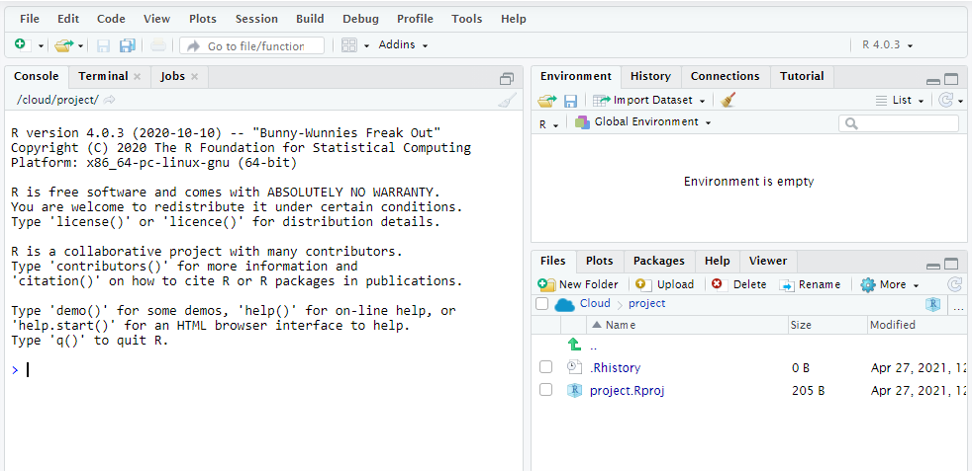
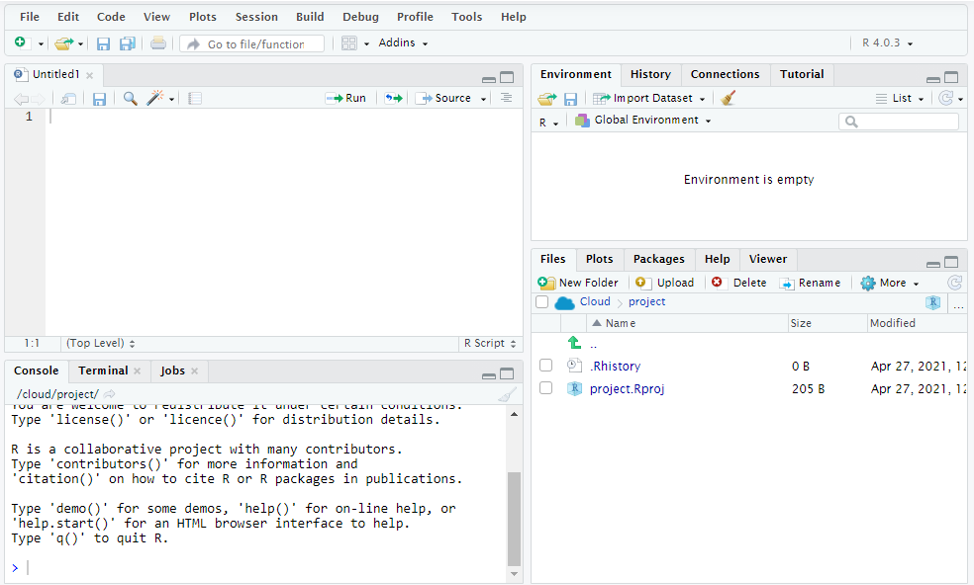

R is a programming language designed for processing, analysis and visualisation of data. That means it is ideally suited to the needs of statisticians and data scientists whose tasks might involve sorting, filtering, and joining datasets, deriving, modifying and processing variables, producing summary statistics and visualizations, or performing complex statistical analyses. Thanks to Rmarkdown and Shiny, R can also be used to produce reports in PDF, HTML and Word formats, presentations, interactive tutorials, and web-based apps with R code integrated into their working.
If you've never used R before then it's likely you and your computer share something in common; neither of you understand the R language. Unfortunately for you, it is much easier to teach your computer! It is essential that we first set up so that our machines can understand R before we start using the R language to interact with it. To do that, we need to download the R interpreter. The R interpreter is a piece of software that you can download from CRAN (Comprehensive R Archive Network). Once installed, it will help you interact with the computer by taking the R code you provide it and translating it into a machine readable language. Just like an interpreter might be able to help you interact with someone that speaks a different language, the R interpreter is helping you and the machine interact.
Once you have downloaded the R interpreter, you can open the R application that came bundled with it. This will open a window called the console. The console is a command line style terminal. You will type R code here, submit it to the interpreter by pressing enter - "executing" the code - and any results generated by that code will be returned here.
To help you practice interacting with the machine via the console, let's try some simple calculations, using R in much the same way as you would use a calculator. Remember, R is not a calculator, but replacing your calculator is perhaps the most basic way it can enter your life. To get started, you will need to know some mathematical operators; plain text symbols used to perform mathematical operations such as addition, subtraction and division.
Parentheses, ( and ), are also useful, and it is worth bearing that R will perform operations with the same order as is standard in mathematics and the order of operations; parentheses are handled first then exponentiation then division and multiplication and then addition and subtraction operations are performed last. Finally, you can start using the R language to interact with your computer.
1. Type the following statements into the console and press enter after each. Note that white space rarely matters in R code, so 1+2 is equivalent to 1 + 2 (but white space does help make code more reader friendly when used well).
2. Write and execute statements to calculate (you may need to use google here; it's deliberate so you get used to converting mathematical equations into R code and think how R understands things)
Completely stuck? You'll find solutions to all tasks at the bottom of the page.
You are now able to use the R programming language to interact with your computer. Those calculations weren't complex code and really do not do justice to what you will soon be able to achieve with R, but it's a start. In those tasks I had you using the console window from the R application downloaded from CRAN. You typed and executed code one statement at a time. You can probably imagine, this interactive way of working is not how most R programming is done. While interactive programming in the console has it's uses, most is done via an editor. An editor is a plain text program where developers write and edit R programs. You could use a simple text editor like notepad or even word for this, but there are much better options available. Most R programmers are using third-party development environment applications. Among the most popular of these is RStudio; I recommend using this application and keyboard shortcuts throughout these notes will be specific to RStudio. RStudio offers advantages over the basic R application:
Download and install RStudio. If you cannot download and install RStudio on your computer, do not worry - RStudio can also be accessed via the RStudio Cloud with a web browser and behaves just like the locally installed RStudio application. You might even prefer to use the cloud-based system as it allows you to access projects from any machine as script files are stored on the cloud; my personal preference is using a local install and files saved on Dropbox as I regularly work without a reliable internet connection because of travel/commuting. Note thought that the keyboard shortcuts often differ slightly as the keyboard shortcuts specific to your browser can interfere with things; the shortcuts I note are specific to the locally run version, you can always find the keyboard shortcuts for your RStudio setup by going to Tools > Keyboard shortcuts Help.
When you open RStudio for the first time, you will be greeted by three panes. The most important of these is the console. This console behaves just like the one that opens with the R application you downloaded earlier. You can type R code directly into it, execute it by pressing enter, and the results (if any) are returned on the next line. You can also navigate to previously executed lines of code using the keyboard arrows. As before, the console is a useful area (for occasional tasks, such as installing packages or removing objects, and testing code), but it is not where you will do the majority of you work. Most of the real work, and where programmers write and edit programs, is in an editor located in the source pane. That pane is not present at startup; to open it we need to open a new script file. Go to File > New File > R Script or press Ctrl + Shift + N.
You should now have four panes open in a window that looks similar to the above image. You can adjust appearance and layout settings by going to Tools > Global Options > Pane Layout and Appearance. How you chose to adjust these is entirely up to you; I prefer a dark colour scheme (editor theme) such as dracula to reduce strain on the eyes, and often set up with my source and console panes in the same column and source pane above the console, or with these two panes side-by-side depending on the task I am performing. You can also minimise/maximise panes using the two symbols in the top-right corner of each pane if you find you do not need certain panes. Panel boundaries can be moved by clicking and dragging on the borders - a four-way arrow appears when you hover your mouse in the right position - allowing you to fine tune the height and width of the panes.
3. Adjust the pane layout, setting up with the source pane in the top-left pane and console in the top-right.
4. Browse the editor themes to find one you like, consider whether you want a dark or light based theme, and how well different components of scripts appear in the preview. Make sure to pick a theme where components are easy for you to read and differentiate by colour (the colours will become meaningful to you as you progress making it easy to scan for comments, functions, character strings etc.).
You should now be happy with the layout and looks of your RStudio window. You can change these settings at any time as your needs (and tastes) change. Let's now move on to using the editor. We previously opened a new R script. Unlike the console, text written into here does not disappear when we execute it. It is this file that is used to create larger more complex programs that we need to return to later or run multiple times. But code is not executed in the source pane, it still needs to be run in the console and any outputs will still appear in the console. Fortunately we do not need to copy-paste it into the console; RStudio has a few handy shortcuts that allow code and parts of code ("snippets") to easily be run in the console. There is a run button near the top-right corner of the pane, clicking this will run the line that the cursor is on or the selected snippet of code. More normally, you will use keyboard shortcuts and there are a few really useful ones here:
5. Write the following statements, each on a new line, into the editor:
6. Execute the statements you wrote in the editor using the keyboard shortcuts, executing selected lines and snippets, the entire script, and the script from top to cursor/cursor to end.
When code written in the editor is sent to the console, using keyboard shortcuts or the run button, we see that the console will print the line of code as if it has been manually types and follow that with any relevant results or outputs from that statement. You will notice that the input code and output results are displayed in different colours in the console; that is thanks to the editor theme used in RStudio, making it easier to scan read the console for input or output. RStudio will also provide syntax highlighting in the editor - note that the numbers, mathematical operators and parentheses are different colours - and these colours will take on meaning for you as you learn R.
1. You should be able to type or copy paste and execute each statement, with each returning the correct answers (58, 5, 7.2 and 70). If you are having issues with the R application then do not worry, we don't use this application anyway.
2. This challenges move you on from copying my code to taking written instructions and converting R code yourself. As some hints, an easy way to get 90% of a value would be to multiply it by 0.9; "to the power of" uses the caret symbol, ^, to exponentiate; Fahrenheit to Celsius is the temperature in Fahrenheit minus 32, then times that value by 5/9. In code, the solutions are:
# Four times 17 4*17 # 90% of 5500 0.9*5500 # Two to the power 10 2^10 # Convert 93 degrees Fahrenheit to Celsius (93-32)*(5/9)
## [1] 68 ## [1] 4950 ## [1] 1024 ## [1] 33.88889
3. Go to Tools > Global Options > Pane Layout, then use the drop-down menus to select the components to be shown in each position.
4. There is no right or wrong theme to chose, just pick what you like! The choices are available under Tools > Global Options > Appearance in the Editor Theme menu and a preview of the colours are shown.
5. You should have four lines of code in your editor looking something like this:
45/12 6^2 (4*5)/2 10^2 - ((5*3) + 12)
## [1] 3.75 ## [1] 36 ## [1] 10 ## [1] 73
6. And you should get the answers above. Remember the four keyboard shortcuts: